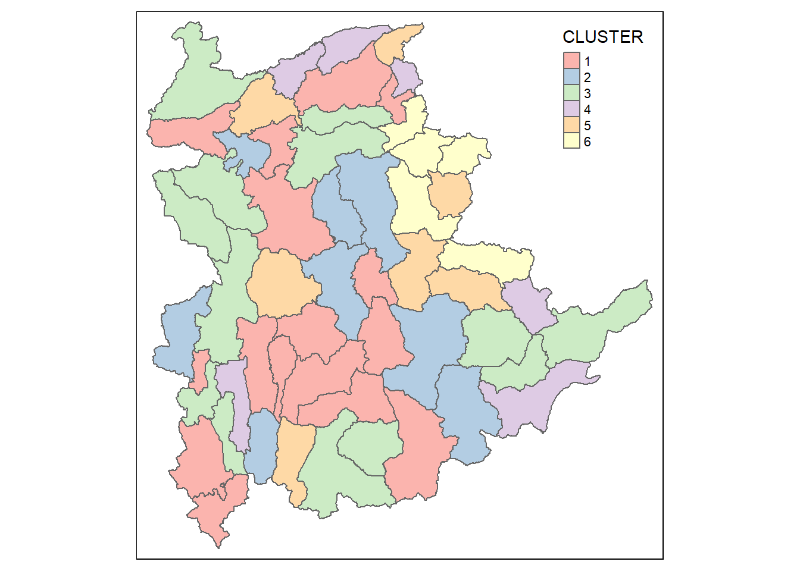

pacman::p_load(rgdal, spdep, tmap, sf, ggpubr, cluster, factoextra, NbClust, heatmaply, corrplot, psych, tidyverse, ClustGeo, GGally)In-class_Ex3
1 Getting started
2 Importing data
n this section, you will import Myanmar Township Boundary GIS data and its associated attrbiute table into R environment.
The Myanmar Township Boundary GIS data is in ESRI shapefile format. It will be imported into R environment by using the st_read() function of sf.
The code chunks used are shown below:
shan_sf <- read_rds('data/shan_sf.rds')shan_sfSimple feature collection with 55 features and 30 fields
Geometry type: MULTIPOLYGON
Dimension: XY
Bounding box: xmin: 96.15107 ymin: 19.29932 xmax: 101.1699 ymax: 24.15907
Geodetic CRS: WGS 84
First 10 features:
OBJECTID ST ST_PCODE DT.x DT_PCODE.x TS.x TS_PCODE
1 163 Shan (North) MMR015 Mongmit MMR015D008 Mongmit MMR015017
2 203 Shan (South) MMR014 Taunggyi MMR014D001 Pindaya MMR014006
3 240 Shan (South) MMR014 Taunggyi MMR014D001 Ywangan MMR014007
4 106 Shan (South) MMR014 Taunggyi MMR014D001 Pinlaung MMR014009
5 72 Shan (North) MMR015 Mongmit MMR015D008 Mabein MMR015018
6 40 Shan (South) MMR014 Taunggyi MMR014D001 Kalaw MMR014005
7 194 Shan (South) MMR014 Taunggyi MMR014D001 Pekon MMR014010
8 159 Shan (South) MMR014 Taunggyi MMR014D001 Lawksawk MMR014008
9 61 Shan (North) MMR015 Kyaukme MMR015D003 Nawnghkio MMR015013
10 124 Shan (North) MMR015 Kyaukme MMR015D003 Kyaukme MMR015012
ST_2 LABEL2 SELF_ADMIN ST_RG T_NAME_WIN T_NAME_M3
1 Shan State (North) Mongmit\n61072 <NA> State rdk;rdwf မိုးမိတ်
2 Shan State (South) Pindaya\n77769 Danu State yif;w, ပင်းတယ
3 Shan State (South) Ywangan\n76933 Danu State &GmiH ရွာငံ
4 Shan State (South) Pinlaung\n162537 Pa-O State yifavmif; ပင်လောင်း
5 Shan State (North) Mabein\n35718 <NA> State rbdrf; မဘိမ်း
6 Shan State (South) Kalaw\n163138 <NA> State uavm ကလော
7 Shan State (South) Pekon\n94226 <NA> State z,fcHk ဖယ်ခုံ
8 Shan State (South) Lawksawk <NA> State &yfapmuf ရပ်စောက်
9 Shan State (North) Nawnghkio\n128357 <NA> State aemifcsdK နောင်ချို
10 Shan State (North) Kyaukme\n172874 <NA> State ausmufrJ ကျောက်မဲ
AREA DT_PCODE.y DT.y TS.y TT_HOUSEHOLDS RADIO TV LLPHONE
1 2703.611 MMR015D003 Kyaukme Mongmit 13652 3907 7565 482
2 629.025 MMR014D001 Taunggyi Pindaya 17544 7324 8862 348
3 2984.377 MMR014D001 Taunggyi Ywangan 18348 8890 4781 219
4 3396.963 MMR014D001 Taunggyi Pinlaung 25504 5908 13816 728
5 5034.413 MMR015D003 Kyaukme Mabein 8632 3880 6117 628
6 1456.624 MMR014D001 Taunggyi Kalaw 41341 11607 25285 1739
7 2073.513 MMR014D001 Taunggyi Pekon 20084 6399 10762 800
8 5145.659 MMR014D001 Taunggyi Lawksawk 25957 10048 16353 818
9 3271.537 MMR015D003 Kyaukme Nawnghkio 32224 11257 17657 1239
10 3920.869 MMR015D003 Kyaukme Kyaukme 28371 5985 17056 1123
MPHONE COMPUTER INTERNET RADIO_PR TV_PR LLPHONE_PR MPHONE_PR COMPUTER_PR
1 3559 166 321 286.1852 554.1313 35.30618 260.6944 12.15939
2 2849 226 136 417.4647 505.1300 19.83584 162.3917 12.88190
3 2207 81 152 484.5215 260.5734 11.93591 120.2856 4.41465
4 6363 351 737 231.6499 541.7189 28.54454 249.4903 13.76255
5 3389 142 165 449.4903 708.6423 72.75255 392.6089 16.45042
6 16900 1225 1741 280.7624 611.6204 42.06478 408.7951 29.63160
7 4315 381 316 318.6118 535.8494 39.83270 214.8476 18.97032
8 8321 565 556 387.1017 630.0035 31.51366 320.5686 21.76677
9 10409 508 1216 349.3359 547.9456 38.44960 323.0201 15.76465
10 10568 878 936 210.9548 601.1773 39.58267 372.4930 30.94709
INTERNET_PR geometry
1 23.513038 MULTIPOLYGON (((96.96001 23...
2 7.751938 MULTIPOLYGON (((96.7731 21....
3 8.284282 MULTIPOLYGON (((96.78483 21...
4 28.897428 MULTIPOLYGON (((96.49518 20...
5 19.114921 MULTIPOLYGON (((96.66306 24...
6 42.113156 MULTIPOLYGON (((96.49518 20...
7 15.733918 MULTIPOLYGON (((97.14738 19...
8 21.420041 MULTIPOLYGON (((96.94981 22...
9 37.735849 MULTIPOLYGON (((96.75648 22...
10 32.991435 MULTIPOLYGON (((96.95498 22...Hierarchical CLustering.
cluster_vars <- shan_sf %>%
st_set_geometry(NULL) %>%
select("TS.x", "RADIO_PR", "TV_PR", "LLPHONE_PR", "MPHONE_PR", "COMPUTER_PR")
row.names(cluster_vars) <- cluster_vars$"TS.x"
shan_ict <- select(cluster_vars, c(2:6))
head(shan_ict, n=5) RADIO_PR TV_PR LLPHONE_PR MPHONE_PR COMPUTER_PR
Mongmit 286.1852 554.1313 35.30618 260.6944 12.15939
Pindaya 417.4647 505.1300 19.83584 162.3917 12.88190
Ywangan 484.5215 260.5734 11.93591 120.2856 4.41465
Pinlaung 231.6499 541.7189 28.54454 249.4903 13.76255
Mabein 449.4903 708.6423 72.75255 392.6089 16.45042proxmat <- dist(shan_ict, method = 'euclidean')nongeo_cluster <- hclustgeo(proxmat)
plot(nongeo_cluster, cex = 0.5)
rect.hclust(nongeo_cluster,
k = 6,
border = 2:5)
Mapping the clusters formed
groups <- as.factor(cutree(nongeo_cluster, k=6))
shan_sf_ngeo_cluster <- cbind(shan_sf, as.matrix(groups)) %>%
rename(`CLUSTER` = `as.matrix.groups.`)
qtm(shan_sf_ngeo_cluster, "CLUSTER", fill.palette = "Pastel1")
Spatially Constrained Hierarchical Clustering
dist <- st_distance(shan_sf, shan_sf)
distmat <- as.dist(dist)cr <- choicealpha(proxmat,
distmat,
range.alpha = seq(0, 1, 0.1),
K=6,
graph = TRUE)

clustG <- hclustgeo(proxmat, distmat, alpha = 0.3)
groups <- as.factor(cutree(clustG, k=6))
shan_sf_Gcluster <- cbind(shan_sf, as.matrix(groups)) %>%
rename(`CLUSTER` = `as.matrix.groups.`)
qtm(shan_sf_Gcluster, "CLUSTER", fill.palette = "Pastel1")Visualizing Individual Cluster Variables
ggplot(data = shan_sf_ngeo_cluster,
aes(x = CLUSTER, y = RADIO_PR, fill = CLUSTER)) +
scale_fill_manual(values = c("#fec0ce",
"#e3879e",
"#cb6a82",
"#704276",
"#af7cb6",
"#e7d8e9")) +
geom_boxplot()Multivariate Visualization
ggparcoord(data = shan_sf_ngeo_cluster,
columns = c(17:21),
scale = "globalminmax",
alphaLines = 0.2,
boxplot = TRUE,
title = "Multiple Parallel Coordinates Plots of ICT Variables by Cluster") +
facet_grid(~ CLUSTER) +
theme(axis.text.x = element_text(angle = 30))shan_sf_ngeo_cluster %>%
st_set_geometry(NULL) %>%
group_by(CLUSTER) %>%
summarise(mean_RADIO_PR = mean(RADIO_PR),
mean_TV_PR = mean(TV_PR),
mean_LLPHONE_PR = mean(LLPHONE_PR),
mean_MPHONE_PR = mean(MPHONE_PR),
mean_COMPUTER_PR = mean(COMPUTER_PR))# A tibble: 6 × 6
CLUSTER mean_RADIO_PR mean_TV_PR mean_LLPHONE_PR mean_MPHONE_PR mean_COMPUTE…¹
<chr> <dbl> <dbl> <dbl> <dbl> <dbl>
1 1 221. 521. 44.2 246. 20.5
2 2 237. 402. 23.9 134. 11.5
3 3 300. 611. 52.2 392. 29.0
4 4 196. 744. 99.0 651. 65.5
5 5 124. 224. 38.0 132. 6.68
6 6 98.6 499. 74.5 468. 21.0
# … with abbreviated variable name ¹mean_COMPUTER_PR